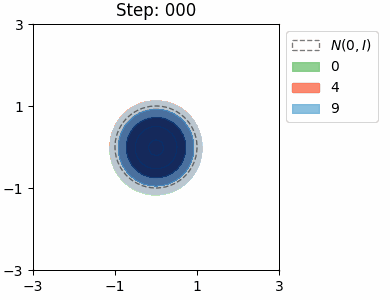

NNs and Deep Learning
This site contains a portfolio of experiments and notes on NNs and DL. The aim is twofold:
- use visualisations to understand the latent space when a NN is training
- keep up to date with NN programming practices
Visualising the Latent Space of a beta-VAE
The KL loss in a VAE encourages the encoder to map inputs to latents that are close to the prior distribution \(\mathcal{N}(0, I)\). We can visualise this distribution for each class in the MNIST dataset by approximating it as a Mixture of Gaussians.
Standard VAE (β = 1)
β = 10

Both VAEs have the same architecture with a 2D latent space, and were trained for a single epoch. In both cases, the model learns to try and separate the the location of the class distributions, however there is significant overlap between the numbers 4 and 9, which is to be expected. The shapes of the distributions are very similar in the beta VAE, which is due the stronger KL loss.
Separable Latent Space in Classification
In classification tasks, a NN learns weights so that it is able to create simple decision boundaries to separate classes in the latent space.

Linear Transformation as a Mask in Classification
When there is no non-linearity in the NN, the weights are equivalent to a single linear transformation. In the case of classification, intuitively, we are applying a mask on the input.

Notes
The notes/ folder contains markdown notes on the relevant NN theory required for the experiments. It also contains notes and exercises from the book Neural Networks and Deep Learning.
For each chapter, I have written some notes and answers to most exercises / problems:
This is a WIP; I have yet to do the later chapters. I also aim to cover the following topics:
- Notes on Activation Functions
- Swish, softplus (for VAE to predict variance)
- Regularisation: L1, L2, Dropout, Continual Backprop
- Grid search over batch-size, lr using hydra
Quarto
Quarto was used to generate the website for this repo.